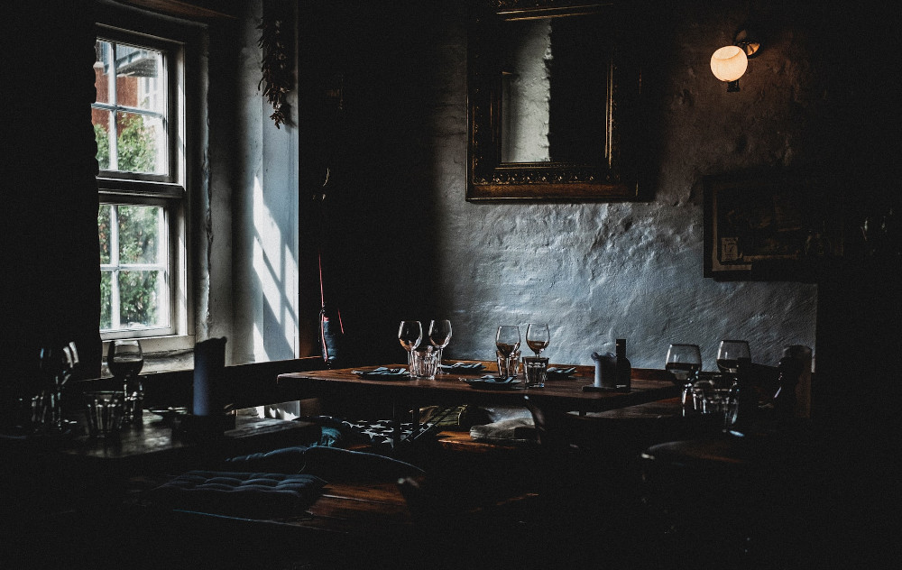

Tasty Ol' Provisions

photo source
Welcome to
Tasty Ol' Provisions
(TOP) where we create only the most scrumptuous meals to fuel a programmer's struggles.
Links to recipes:
Guacamole with all the fixins
Oatmeal with oranges and blueberries
Sun-dried tomatoes